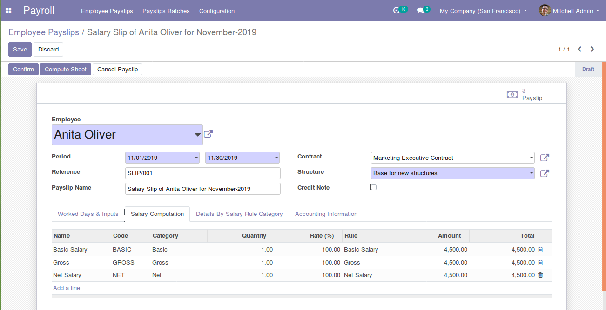

Pay your employees from Odoo 13 Community Edition: salary structures and rules, payslips computed from the contract and the time off, in batches, with the payslip printed.
Pick the employee and the period: the contract, the structure and the worked days are filled in, and the payslip is computed rule by rule — basic, allowances, deductions, gross and net.

A computed payslip.
The worked days of the period are taken from the working schedule, and the time off of the employee is listed on its own lines, ready for the salary rules.
A salary structure is a set of rules, and a structure can inherit from another one. Each rule says when it applies and how much it is worth.
Create a batch for the period, generate the payslips of the employees you choose, compute them and confirm them together.
Add Payroll Accounting to post a journal entry for each confirmed payslip, from the accounts of the salary rules. Install it from Payroll > Configuration > Settings.
Works with Odoo 13 Community and Odoo 13 Enterprise. On Enterprise, it cannot be installed together with the Enterprise Payroll app: both define the payslips and the salary rules. Use one or the other.
Odoo Mates HR is open source and grows with the people who use it. Every report, review, fix and translation is welcome. New to it? Ask, and we guide you.
i18n files of each module.github.com/odoomates/hr · odoomates@gmail.com
If you love it, let us know. Always your Odoo Mates.